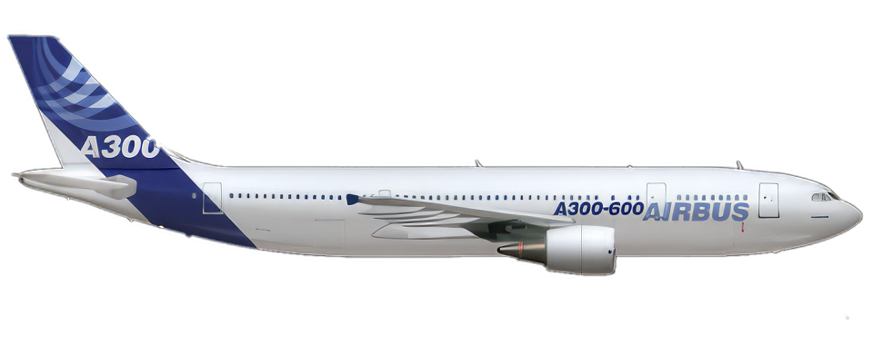
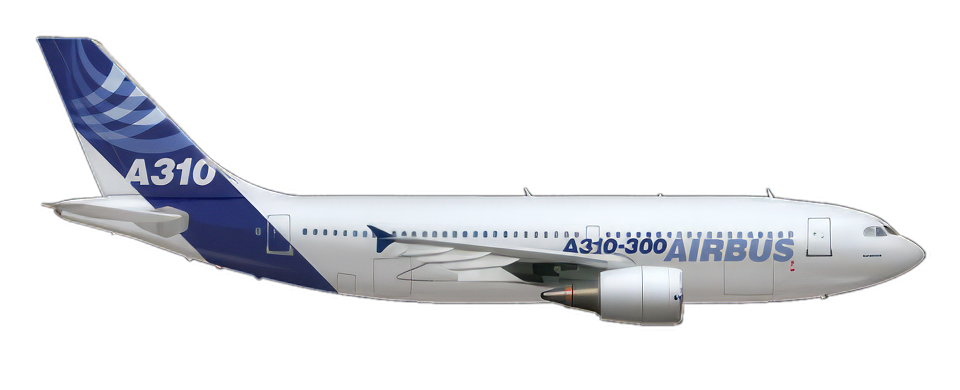
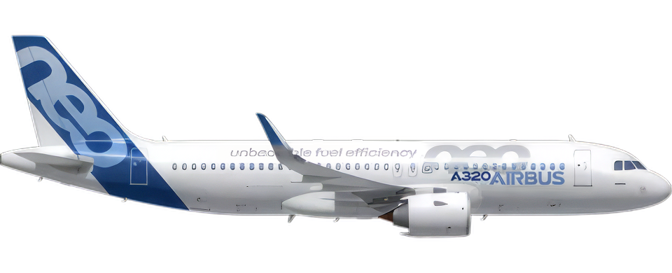
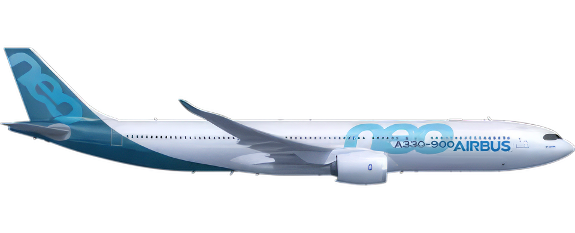
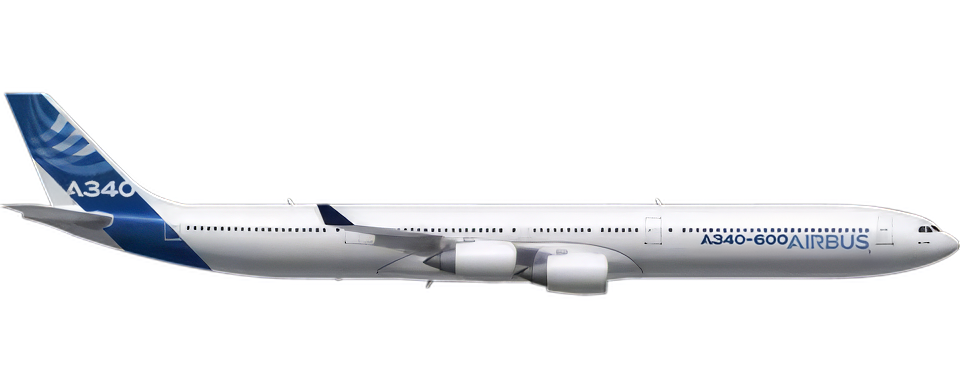
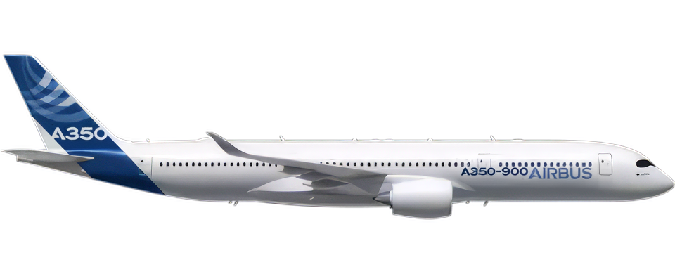
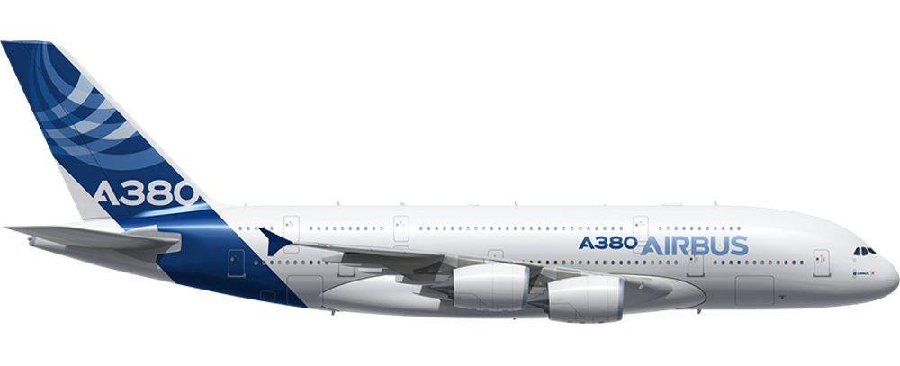
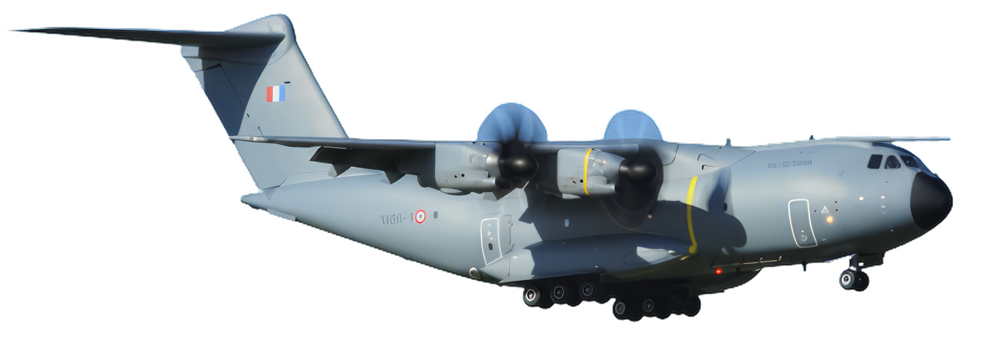
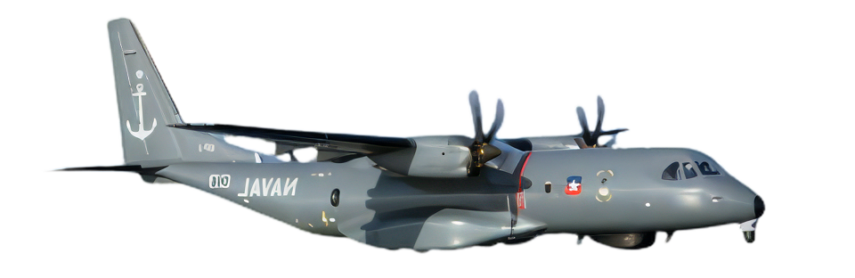

Airbus A300
The Airbus A300 is the first twin-engine wide-body jet airliner developed by Airbus, marking its commercial debut in 1974.
Airbus A310
Introduced in 1983, the Airbus A310 is known for pioneering digital fly-by-wire technology in a shorter-fuselage wide-body aircraft.
Airbus A320
Launched in 1988, the Airbus A320 revolutionized the single-aisle market with its innovative fly-by-wire system.
Airbus A330
The Airbus A330, a versatile medium- to long-range wide-body jet, entered service in 1994 and is popular for its efficiency.
Airbus A340
Known for its four-engine configuration, the Airbus A340 was designed for long-haul flights, entering service in 1993.
Airbus A350
The Airbus A350, a modern long-range wide-body aircraft, began service in 2015, featuring advanced materials and technologies.
Airbus A380
The Airbus A380, known as the largest passenger airliner in the world, first took to the skies in 2007.
Airbus A400M
The Airbus A400M Atlas, a military transport aircraft, combines tactical and strategic capabilities, debuting in 2013.
Airbus C295
The Airbus C295 is a tactical airlifter, known for its robustness and versatility, first entering service in the early 2000s.
